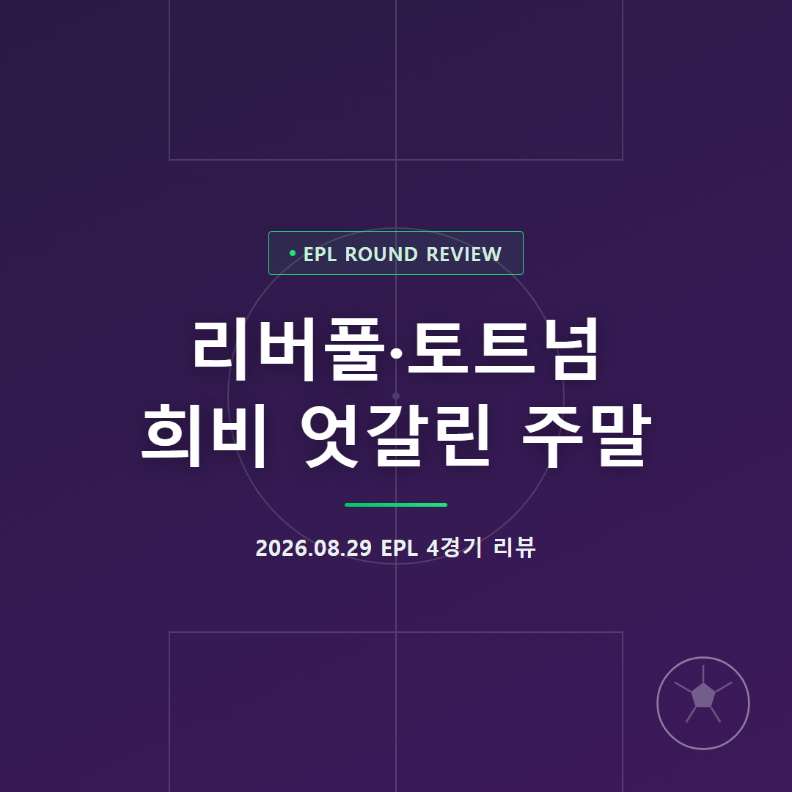
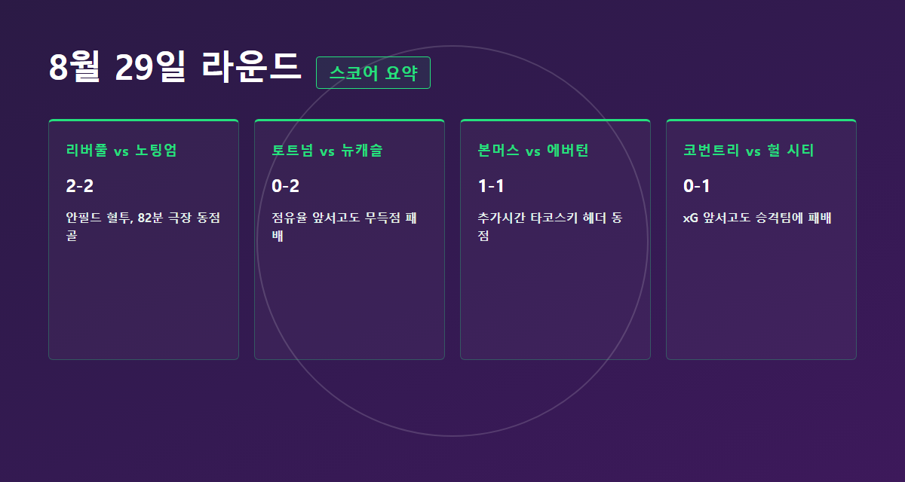
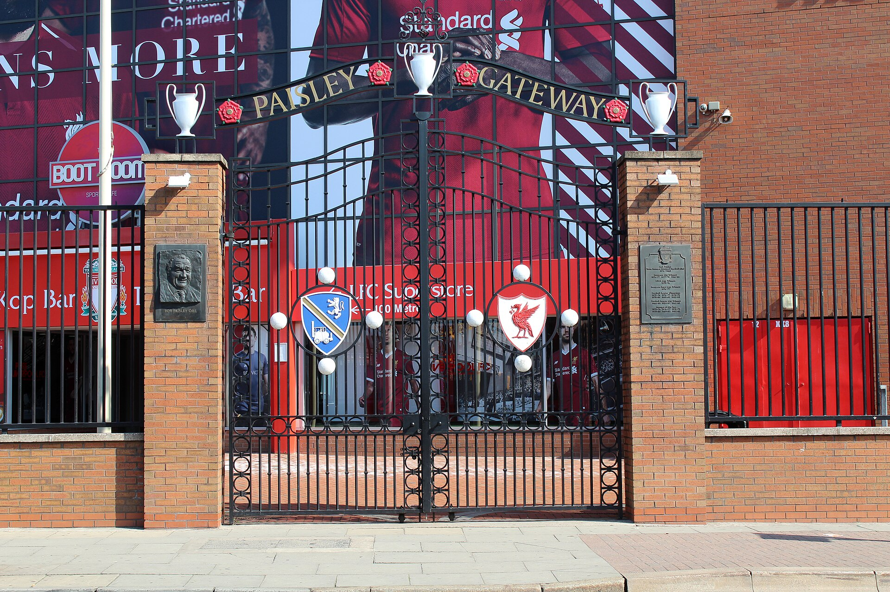
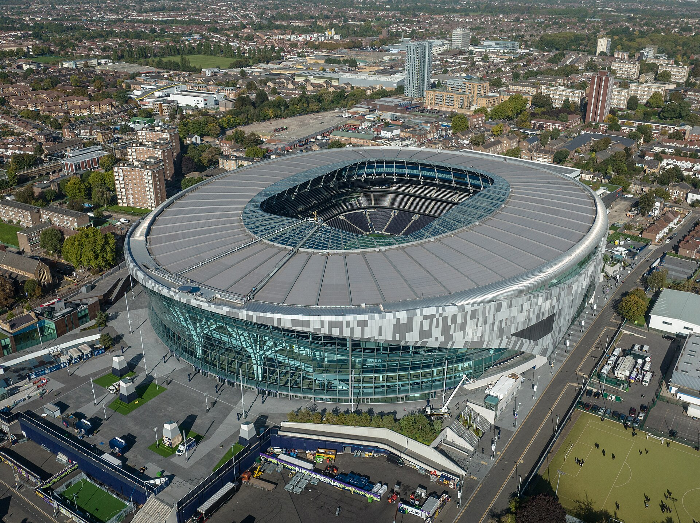
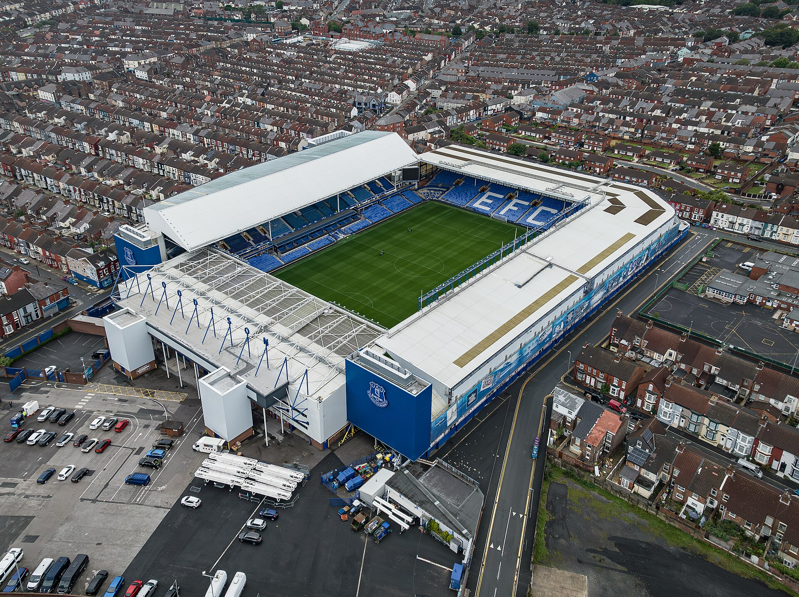

오늘이 9월 5일 토요일이라 이번 주 EPL 경기가 다들 궁금하실 텐데, 아쉽게도 오늘 라운드는 아직 킥오프 전이라 다룰 수가 없었습니다.
그래서 이번 글에서는 바로 직전 토요일, 그러니까 8월 29일에 열렸던 4경기를 리뷰하려고 합니다.
리버풀과 토트넘이라는 빅클럽 두 팀이 나란히 홈에서 애를 먹었고, 승격팀들의 희비도 극명하게 갈린 라운드였기에 하나씩 짚어볼 가치가 있습니다.
그럼 한번 살펴봅시다.

안필드에서 열린 이 경기는 스코어만 봐도 시소게임이었다는 게 드러납니다.
24분 노팅엄 포레스트의 댄 은도예(Dan Ndoye)가 선제골을 넣으며 원정팀이 먼저 웃었습니다.
하지만 60분 알렉산더 이사크(Alexander Isak)가 동점골을 터뜨리며 리버풀이 균형을 맞췄고, 분위기가 넘어가나 싶었습니다.
그런데 70분 모건 깁스화이트(Morgan Gibbs-White)가 페널티킥을 성공시키며 노팅엄 포레스트가 다시 앞서갔습니다.
경기 막판까지 몰렸던 리버풀은 82분 빅토르 무뇨스(Víctor Muñoz)의 동점골로 겨우 2-2 무승부를 만들어냈습니다.
일단 리버풀 입장에서는 홈에서 두 번이나 리드를 내준 것이 아쉬운 대목이기에, 수비 안정성에 물음표가 붙을 수밖에 없는 경기였습니다.

사진: Rodhullandemu · CC BY-SA 4.0 · Wikimedia Commons (출처: https://commons.wikimedia.org/wiki/File:Paisley_Gateway,_Anfield.jpg)
토트넘은 이 경기에서 슈팅 23개, 점유율 52~58%를 기록하며 확실히 공세를 주도했습니다.
그럼에도 유효슈팅은 6개에 그쳤고, 결국 득점 없이 경기를 마쳤다는 점이 뼈아픕니다.
반면 뉴캐슬은 슈팅 4개(유효 2개)로 훨씬 적은 기회만 만들었지만, 62분 앤서니 엘랑가(Anthony Elanga)와 72분 요안 위사(Yoane Wissa)가 각각 골을 넣으며 실속을 챙겼습니다.
효율적인 축구로 승점을 챙긴 셈이기에, 뉴캐슬 입장에서는 신임 사령탑 마티아스 야이슬레(Matthias Jaissle) 체제에서 첫 승을 신고한 값진 결과였습니다.
토트넘은 개막 이후 2연패에 빠지며 승점 0점에 머물렀는데, 여름 이적시장에서 뉴캐슬을 떠나 합류한 산드로 토날리가 이 경기에서 홈 팬들의 야유를 받았다는 이야기도 나왔습니다.
다만 이 경기의 구체적인 득점 전개 경로 일부는 매체마다 서술이 엇갈려서, 여기서는 확인된 골 시각과 득점자까지만 정리했습니다.

사진: Arne Müseler · CC BY-SA 3.0 de · Wikimedia Commons (출처: https://commons.wikimedia.org/wiki/File:London_Tottenham_Hotspur_Stadium.jpg)
본머스는 41분 에바닐손(Evanilson)의 도움을 받은 알렉스 스콧(Alex Scott)의 골로 앞서가며 승리에 바짝 다가서 있었습니다.
경기 종료가 코앞이었던 후반 추가시간 1분, 제임스 타코스키(James Tarkowski)가 코너킥 상황에서 헤더로 극장골을 꽂아 넣으며 스코어를 1-1로 되돌렸습니다.
본머스 입장에서는 막판까지 지키던 리드를 놓쳤기에 승점 2점을 날린 셈이고, 에버턴은 반대로 값진 승점 1점을 건진 결과입니다.
이런 식으로 추가시간에 승부가 뒤집히는 경기는 시즌 초반 흐름에 은근히 영향을 주는 편이기에, 두 팀 모두 곱씹어볼 장면이었을 것으로 보입니다.

사진: Arne Müseler · CC BY-SA 3.0 de · Wikimedia Commons (출처: https://commons.wikimedia.org/wiki/File:Liverpool_fc_everton_stadium.jpg)
25년 만에 EPL 무대를 밟은 코번트리 시티의 홈경기라는 상징성이 있었지만, 결과는 아쉽게도 패배였습니다.
경기 내용만 보면 코번트리가 나쁘지 않았습니다. 기대득점(xG) 기준으로 코번트리가 1.28을 기록해 헐 시티의 0.73을 앞섰기 때문입니다.
그럼에도 82분 교체 출전한 리암 밀러(Liam Millar)의 결승골을 헐 시티가 지켜내면서, 스코어보드에서는 헐 시티가 웃었습니다.
헐 시티는 맨체스터 유나이티드전 승리에 이어 2연승을 달렸다는 점에서 승격팀치고는 나름 인상적인 출발을 보이고 있는 것으로 보이고, 코번트리는 반대로 2연패에 빠지며 고전하는 모양새입니다.
기회를 더 많이 만들고도 결과를 못 낸 코번트리 입장에서는 골 결정력 문제를 짚어봐야 할 상황입니다.
사진: Asj1977 · CC0 · Wikimedia Commons (출처: https://commons.wikimedia.org/wiki/File:Coventry_Building_Society_Arena_november_2025.jpg)
원래는 이 시점 순위표까지 정리해서 보여드리고 싶었지만, 솔직히 말씀드리면 이번 라운드 순위 수치는 소스마다 들쭉날쭉해서 그대로 인용하기가 어려운 상황입니다.
그래도 4경기 결과만 놓고 흐름을 완곡하게 짚어보면, 토트넘은 2연패로 최하위권까지 밀렸을 가능성이 크고, 헐 시티 같은 승격팀은 오히려 상위권에서 선전하고 있는 것으로 보입니다.
코번트리는 승격 첫 시즌부터 하위권에서 고전하는 흐름이 이어지는 편이고, 리버풀이나 에버턴처럼 무승부를 챙긴 팀들은 중위권 어딘가에 자리하고 있을 것으로 예상됩니다.
정확한 몇 위, 몇 점 같은 숫자는 다음 라운드가 끝나고 공식 자료가 안정되면 다시 정리해드리는 게 맞다고 생각합니다.
이번 8월 29일 라운드는 결국 "내용보다 결과"였던 라운드로 정리될 것 같습니다.
토트넘과 코번트리는 슈팅과 기대득점에서 앞서고도 승점을 못 챙겼고, 뉴캐슬과 헐 시티는 적은 기회로도 실속을 챙겼기에 대비가 뚜렷했습니다.
리버풀도 홈에서 두 번이나 리드를 내준 수비 불안이 다음 라운드까지 이어질지 지켜봐야 할 전망입니다.
다음 토요일 라운드에서는 이 흐름이 이어질지, 아니면 뒤집힐지 궁금해집니다.